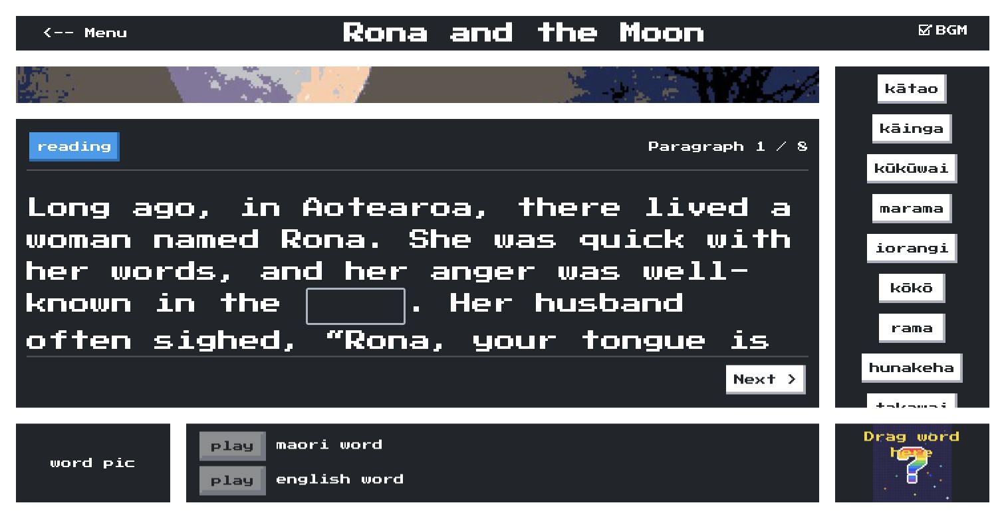

Story Filler combines Māori stories, a word bank, illustrations and pronunciation
audio. It connects a React frontend, Django API and administration, PostgreSQL data
and uploaded media.
Story Filler began as a postgraduate Professional Software Development course
project. After the original two-person team became a solo project, I completed the
application, a working local Kubernetes demo and the supporting coursework within
the remaining deadline.
After the course, I adapted the application for long-term public demonstration with
low hosting costs and less infrastructure to maintain. The managed deployment
accepts slower initial access and limited configured capacity for a small,
infrequently visited application.
Architecture.
I separated compute, data and media, moving public delivery to managed hosting while
retaining the local infrastructure work as part of the project.
Delivery.
The implementation separates Terraform configuration from application image
releases, with independent frontend and backend pipelines.
Verification.
During the September review, I used AI assistance to investigate a blocked image
release and checked the fix through tests, scanning and deployed API reads.

The public application · Rona and the Moon · Story view captured 28 September 2026.
02 / Architecture
The workload stayed small.
The operating model changed.
Local environments expose networking, storage and workload lifecycle directly. Managed
hosting reduces the infrastructure operated for the public application, while
configuration, dependencies and data remain project responsibilities.
The public deployment
Compute, relational data and media have separate homes.
Deployment verified
ClientBrowser
React application
HTML / JS→
Static hostingGitHub Pages
HTTPS API→
Application runtimeCloud Run
Django · Gunicorn · WhiteNoise
→ Neon PostgreSQL
Queries over TLS
Public media→
Object storageGoogle Cloud Storage
Images and pronunciation audio
The browser requests assets from Pages, API responses from Cloud Run and public
media from GCS. Django accesses Neon and integrates with GCS for media management.
Traffic entryIngress
Frontend and API path routing
↓ Routes to application Services
Service + DeploymentFrontend
Nginx container
Service + DeploymentBackend
Django + media PVC
Service + StatefulSetPostgreSQL
Database PVC
Backend → PostgreSQL Service
Migration & admin Jobs → database
Secret references → workloads
Debug Pods → network / database checks
These historical manifests describe single-replica workloads. Current frontend
source supports
/story-filler/; the historical images were not rebuilt or rerun in
this review.
Configuration review notes
record the remaining verification boundaries.
The development feedback loop
One browser origin; service names inside the network.
Configuration checked
ClientBrowser
localhost
→
Shared entry pointNginx :80
Pages, API, admin and media
↓ Routes to frontend and backend
FrontendVite :5173
Source mount + HMR
BackendDjango :8000
Source + media mounts
DatabasePostgreSQL
Named data volume
Django → PostgreSQL as
db
Nginx → Vite WebSocket for HMR
Browser → same-origin
/api/
Database readiness → migrate → start
Compose configuration parsing passed; runtime startup was outside this review. The
production-style variant uses built frontend assets and Gunicorn.
See the configuration review notes.
Choose what to operate.
Make the boundaries explicit.
The goal changed after the course: from completing a local submission to keeping a
small application publicly accessible. I chose managed services to reduce hosting
costs and infrastructure maintenance, accepting slower initial access and limited
configured capacity. The decisions below explain where those trade-offs appear in the
implementation.
a.
Match compute to a modest workload
The Cloud Run revision template sets a minimum of zero and maximum of one
instance, with 1 vCPU and 512 MiB per instance. Static frontend hosting removes a
continuously running frontend service. The aim is a manageable footprint for a
personal application.
Accepted cost
Cold starts and a low capacity ceiling. Capacity and operating cost depend on
the workload.
b.
Keep state outside replaceable compute
Neon holds relational data; GCS holds uploaded media. Releasing a backend image
does not require moving those files or database records between containers.
Accepted cost
More provider and access-control boundaries. Schema compatibility, backups and
restoration remain application responsibilities.
c.
Separate infrastructure from application releases
Terraform declares Artifact Registry, the runtime service account, Cloud Run and
public invocation. CI selects the commit-tagged image; Terraform ignores changes
to that image field.
Accepted cost
The image is outside Terraform reconciliation. Neon, media/state buckets and CI
identity are prerequisites, so this is a defined IaC scope rather than a
complete environment rebuild.
This September retrospective connects the migration account to decisions visible in
the implementation; it is not a contemporaneous design log.
The local work is part
of the engineering evidence.
The existing local configurations show service networking, workload lifecycle and
persistence directly. Selected source files below make those choices inspectable.
Docker Compose
Networking & iteration
A shared Nginx origin connects the browser to Vite and Django while the backend
reaches the database by service name.
Source mounts and HMR for the development loop.
Separate data and media volumes.
Readiness check, migration and startup order.
Same-origin API and frontend path corrections in the review.
Earlier demo
Host-run Django / React. Compose starts only PostgreSQL. A simpler full-text story
contract.
Maintained application
Separate story list/detail responses, paragraphs, word-bank links and media.
Different environments
The prototype, local lab and public deployment have distinct setup and
verification boundaries.
These files preserve the earlier local implementation. The September review covered
configuration, with runtime reproduction outside its scope.
Read the review notes.
05 / Delivery
A release should have
an observable result.
The backend pipeline connects a source revision to a built image, a vulnerability
gate, a Cloud Run update and a read-only check of the deployed public API. Frontend
delivery is independent.
Step 1
TestDjango + smoke-check tests
Step 2
BuildMulti-stage, non-root image
Step 3
ScanTrivy severity gate
Step 4
DeployCommit-tagged image
Step 5
VerifyLive public API reads
A historical release / September 2026
The scanner blocked the first attempt.
Trivy found 12 fixable HIGH findings: ten in Pillow and two in libraries bundled
with pip. Image publication and deployment stopped. The fix upgraded Pillow to 12.3
and removed unnecessary installer tooling from the final runtime image after
dependency checks. Build tooling stayed in the builder.
The next release passed the same scanning policy, deployed and passed the public API
smoke check.
The gate covers fixable HIGH/CRITICAL findings, not every vulnerability. Backend lint
and CodeQL are advisory; the independent history secret scan does not gate deployment.
A failed post-deployment check does not automatically roll back the service.
06 / Delivery history
A development record,
including the failed runs.
Story Filler continues the work from the original private repository,
jothep/maori-story-fill. Its cleaned Git history is preserved in the new
project. The earlier Actions records stay with their source repository.
Original commits
185
October 2025–May 2026
Historical workflow runs
198
126 succeeded · 72 failed
Workflow breakdown, collection notes & downloads
Legacy repository snapshot · 28 September 2026 · 132 distinct source commits across
the retained Actions records.
Retained workflow results from the original private repository
Workflow family
Runs
Success
Failure
Earlier backend CI
41
21
20
Earlier frontend CI
48
22
26
Cloud Run delivery
18
6
12
GitHub Pages delivery
37
28
9
CodeQL analysis
50
45
5
Git history credential scan
3
3
0
Initial combined pipeline
1
1
0
Total
198
126
72
The authenticated GitHub Actions API returned 198 completed run records; each
reported one attempt. The table includes CI, security scans and delivery workflows.
These are workflow completion counts, not deployment counts, uptime measurements or
hours worked.
The cleaned migration baseline contains 189 commits: the original 185 commits
preserved once, plus four September publication-preparation commits.
The new public repository independently passed frontend and backend delivery and
history scanning on 28 September 2026. Its release records are separate from the
earlier workflow totals.
Verified release from the new repository
Current project · story-filler
New repository. Separately verified delivery.
Migration snapshot 1713b97 contains 190 commits, including the
preserved 189-commit baseline. The move retained the existing Cloud Run service
and runtime configuration; the backend release changed only the image.
The public run records below document the new repository's release. Test
results, deployment details and browser-check limits are collected in
Evidence & boundaries.
AI assisted the September review, implementation and documentation. The useful outcome
is an inspectable chain from a problem to a verified change.
Frame the work
I set the direction: preserve the existing project, prioritize valuable
improvements, keep credentials out of public history, and distinguish
implementation from deployment evidence.
Investigate and implement with assistance
The work used AI to trace configuration and dependency behavior, add secret
scanning and API checks, and prepare a bounded image fix. Generated suggestions
were checked against source, runtime behavior and pipeline results.
Keep the verification visible
The failed scan and successful retry remain separate records. Tests, image
scanning and public API checks support the change; they do not prove untested
behavior. Production credential rotation and administrator access were also
confirmed during the review.
In my July essay,
Stop Asking What AI Can Do. Ask What You Can Verify,
I explain why domain knowledge and human judgment matter when using AI. The release
investigation above offers a concrete engineering example of that approach.
08 / Evidence & boundaries
What has actually
been demonstrated.
These checks span
27–28 September 2026. The cloud delivery row records the new
repository’s migration release; the local and infrastructure boundaries remain those
of the September review.
Implementation and verification status of the Story Filler project
Area
Status
What the evidence establishes
Cloud delivery
Verified
Verified on 28 September: the new repository delivered the frontend and backend.
Image
1713b97
reached revision
00028-gdm
with 100% of service traffic; public API reads passed.
Application checks
Verified
The migration release passed 11 backend tests (SQLite/local media), six offline
smoke-check tests and six frontend tests (mocked HTTP/audio). Browser checks
covered the story list, detail and image; API checks were read-only. Uploads,
audio playback and full gameplay were outside the verified scope.
Infrastructure code
Partly verified
Terraform formatting and validation passed; remote state listed four declared
resources. No plan, apply or clean-room rebuild was performed in this review.
Local lab & demo
Implemented
Compose configurations parsed and Kubernetes manifests were reviewed. Runtime
reproduction was outside this review.
Recovery & scale
Outside scope
No automated rollback, restore exercise, measured SLO, load capacity result or
verified zero-cost bill is presented.
Scope of the local configuration review
The historical Kubernetes manifests declare PostgreSQL probes, but not application
probes, Ingress TLS or autoscaling. Frontend source now supports
/story-filler/; historical image tags were not rebuilt or exercised in
this review.
Compose parsing passed. Non-root access to host mounts and newly created media
volumes was not runtime-verified. The earlier demo has a separate API contract; its
empty test scaffolds are not counted as coverage.
Historical release records
The
public historical verification summary
records the blocked image release, remediation and subsequent checks. Original
Actions logs remain in the private repository; the
delivery history
above includes publicly accessible aggregate downloads and separate new-repository
runs.
These two Medium articles record the project's earlier architecture and delivery
choices. Start with the migration rationale, then the pipeline design; use the current
case study and verification record to follow what changed.
Why a solo-maintained application moved from a Kubernetes lab to static frontend
hosting, Cloud Run and Neon. The central decision was to reduce the infrastructure
to operate while keeping compute, data and media separate.
How separate frontend and backend workflows take changes through validation, build
and deployment, with Terraform managing the declared cloud infrastructure. A small
project puts familiar enterprise delivery practices into a simpler operating
model.
How the published articles relate to today's project
The articles retain their original titles and describe the project at publication.
It is now named
story-filler, with a new public repository and application URL. The
migration article describes S3-compatible storage; the current media backend is GCS.
The September review makes the verification scope more precise: Terraform covers
defined GCP resources rather than a complete environment rebuild, backend lint is
advisory, and image scanning gates fixable HIGH/CRITICAL findings. A zero-cost bill,
high-availability guarantee, measured DORA performance and enforced branch
protection are not established by this case study. See the
current evidence and boundaries.